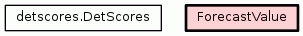

Class ForecastValue
source code

Compute FV, forecast value, as Buizza 2001.
Example that returns FV for exceeding 0.1 units (e.g., QPF)
using the default range of cost/loss ratios:
FV = ForecastValue(fcst_arr=arr1,obs_arr=arr2,thresh=0.l,
overunder='over')
Then, access the FV for a given cost/loss ratio with:
FV.get(0.02)
This will return None is the cost/lost ratio doesn't exist.
Todo:
* Shouldn't this be a mix-in of `ProbScores` and `DetScores`?
Args:
CLs (N.ndarray, tuple, list): Cost-loss ratios to compute
FV as function of each ratio
args,kwargs: Arguments sent to the superclass to compute 2x2 contigency.
It's probably best to use keywords (`kwargs`).
|
|
|
|
|
|
|
|
get_FV(self,
cl)
Return the FV for a given cost/loss ratio, otherwise None. |
source code
|
|
|
Inherited from detscores.DetScores:
check_approx,
compute_E,
compute_all,
compute_ar,
compute_bias,
compute_csi,
compute_falsealarmrate,
compute_falsealarmratio,
compute_gilbert,
compute_heidke,
compute_hitrate,
compute_kss,
compute_pcli,
compute_peirce,
compute_pfd,
compute_pod,
compute_propcorrect,
compute_successrate,
compute_threat,
compute_yuleq,
get
|
Compute FV.
Note the variable "x" is the minimum of C/L ratio and P_cli.
Args:
cl (float) : Cost/loss ratio
|